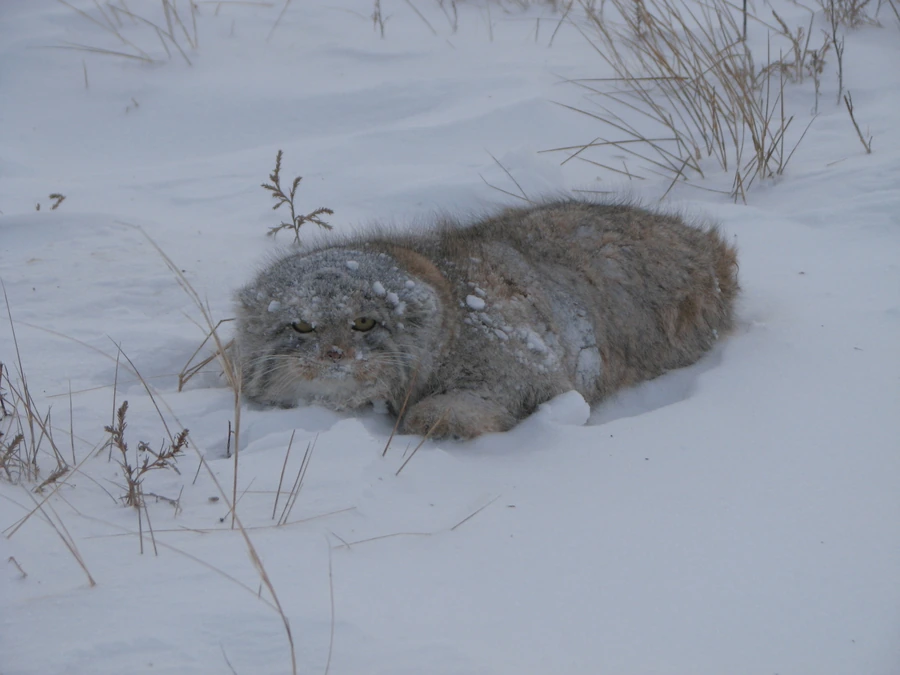

哺乳动物 · 动物界
兔狲 Otocolobus manul

中亚高寒草原的小型猫科动物，圆脸平耳、被毛厚密，瞳孔呈圆形，常占据旱獭的洞穴躲避严寒与天敌。
- 分类
- 门脊索动物门纲哺乳纲目食肉目科猫科属兔狲属
- 栖息环境
- 海拔 1000–5000 米的干旱草原、荒漠与高山草甸
- 地理分布
- 中亚高原，从伊朗、蒙古到中国青藏高原、内蒙古和新疆
- 保护级别
- IUCN 无危（LC）；中国国家二级保护动物
物种志
兔狲体长 0.46–0.65 米，尾长 0.21–0.31 米，体重 2.5–4.5 kg，体形与家猫相仿但更粗壮。它的被毛极厚，腹部毛长可达 7 cm，毛色为浅灰至沙黄，散布黑色斑点；脸圆而扁，耳朵小而圆、位置低平，瞳孔是圆形的而不是竖缝。
兔狲分布于中亚的高原和草原，从里海沿岸、伊朗、阿富汗到蒙古、中国青藏高原和内蒙古，栖息于海拔 1000–5000 米的干旱草原、荒漠和高山草甸。它多在晨昏和夜间单独捕猎，主食鼠兔、沙鼠、黄鼠等啮齿类，也捕食鸟类和昆虫。兔狲自己不擅长挖洞，常利用旱獭、狐狸的废弃洞穴作为巢穴。雌兽妊娠期约 66–75 天，每胎 2–6 仔。因草原开垦、灭鼠活动和毛皮贸易，部分地区种群下降，中国将其列为国家二级保护动物。
形态与习性
- 食性鼠兔、沙鼠、黄鼠等啮齿类，也吃鸟类和昆虫
- 体长0.46–0.65 m，尾长 0.21–0.31 m
- 体重2.5–4.5 kg
- 寿命野外约 6–10 年
- 繁殖妊娠期约 66–75 天，每胎 2–6 仔
- 毛发腹毛长可达 7 cm，是御寒的关键
- 瞳孔圆形，与多数猫科的竖缝瞳孔不同
趣味知识
- 兔狲的瞳孔是圆形的，与多数猫科的竖缝瞳孔不同。
- 它自己不善于挖洞，常占用旱獭或狐狸废弃的洞穴。
- 腹部毛长可达 7 cm，让它在严寒的高原上保持温暖。
- 兔狲脸部扁平、耳朵低平，便于在草丛中隐蔽观察。